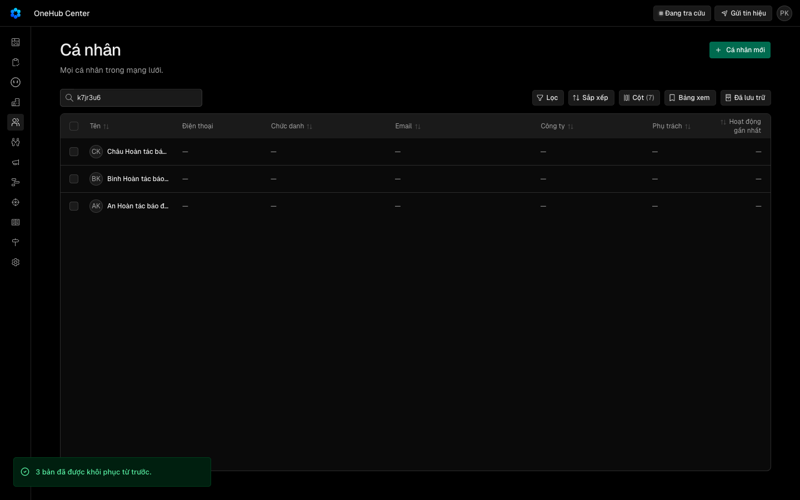

Lưu trữ và hoàn tác hàng loạt báo đúng — lỗi máy chủ không hiện thành «bị bỏ qua», hoàn tác khi mọi bản đã về không báo lỗi, lỗi từng bản ghi có dòng log
Vì sao làm
Lưu trữ và hoàn tác hàng loạt báo đúng: lỗi máy chủ không hiện thành «bị bỏ qua», hoàn tác khi mọi bản đã về không báo «chưa hoàn tác được», lỗi từng bản ghi có dòng log
Đã hứa
- AC-1 — Given `runBulk` nhận bốn id mà thao tác lần lượt trả bản ghi, trả `null`, ném `NotFoundException` và ném một lỗi thường, When chạy, Then kết quả là `requested 4, succeeded 1, skipped 1, failed 2, errored 1`, `changedIds` chỉ có id đầu; `Logger.error` được gọi đúng một lần với `recordId` của id ném lỗi thường và đối số thứ hai đúng là stack của lỗi đó; `Logger.warn` được gọi đúng một lần với `recordId` của id không còn.
- AC-2 — Given lô gồm bản đang dùng, bản đã lưu trữ từ trước và id không tồn tại, của cá nhân, công ty hay thoả thuận, When gọi lưu trữ rồi khôi phục hàng loạt qua tRPC thật trên máy chủ thật, Then thân kết quả có `errored` bằng 0 và các số `succeeded`, `skipped`, `failed`, `changedIds` đúng như luật đã ký của V2d (id không tồn tại vẫn tính vào `failed`). (cross-layer)
- AC-3 — Given lưu trữ hàng loạt trả `succeeded 2, skipped 1, failed 2, errored 1`, When toast hiện, Then toast nói 2 bản đã lưu trữ, 2 bản bị bỏ qua (`skipped + failed − errored`) và 1 bản chưa lưu trữ được vì máy chủ gặp lỗi, có «Hoàn tác», và không chứa lời lỗi thô; Given `succeeded 0, failed 3, errored 3`, Then là toast lỗi «3 bản chưa lưu trữ được…», không có chữ «bị bỏ qua», không có «Hoàn tác»; Given `succeeded 0, skipped 1, failed 2, errored 1`, Then là toast lỗi nói 2 bản bị bỏ qua và 1 bản chưa lưu trữ được, không có «Hoàn tác».
- AC-4 — Given «Hoàn tác» sau lưu trữ hàng loạt trả `succeeded 0, skipped 3, failed 0`, When toast hiện, Then là toast thành công «3 bản đã được khôi phục từ trước.» và không có «Chưa hoàn tác được»; Given `succeeded 0, failed 3`, Then vẫn là toast «Chưa hoàn tác được…» như V2d.
- AC-5 — Given kết quả thiếu trường `errored` (máy chủ cũ, dữ liệu của bài V2d), When toast lưu trữ hay hoàn tác hiện, Then hành xử đúng như V2d, và các bài đã ký của V2d (`htl-luu-tru`, `htl-hoan-tac` phía máy chủ; `htl-hoan-tac-dung-id`, `htl-hoan-tac-thieu`, `htl-luu-tru-bo-qua`, `htl-en` phía app) chạy lại không sửa.
- AC-6 — Given giao diện tiếng Việt và tiếng Anh, When đọc các toast mới ở AC-3, AC-4, Then chữ vi như trên, chữ en không có ký tự tiếng Việt có dấu; khoá chữ mới có đủ cặp vi/en.
- AC-7 — Given bản chạy thật của cây này, ba cá nhân đang dùng trong bảng, When chọn cả ba, lưu trữ hàng loạt, rồi trước khi bấm «Hoàn tác» cả ba được khôi phục ở máy chủ (như người khác vừa làm), rồi bấm «Hoàn tác» ở khổ 1440, Then toast nói «3 bản đã được khôi phục từ trước.», không có «Chưa hoàn tác được», cả ba dòng có trong bảng và máy chủ báo cả ba không còn mốc lưu trữ. (cross-layer)
- AC-8 — Given ảnh chụp của AC-7, When một người không làm lượt này nhìn, Then hiểu ngay các bản ghi đã ở lại danh sách, không phải có lỗi.
- AC-9 — Given `docs/api.md` mục «Deleting a record is archive first, purge later», When đọc, Then có đoạn nói nghĩa của `changedIds`, `skipped`, `failed`, `errored` trong kết quả hàng loạt và nói mỗi lỗi từng bản được ghi một dòng log kèm `recordId`.
Thiết kế
docs/superpowers/specs/2026-10-14-hoan-tac-loat-bao-dung-design.md
Quyết định
- 2026-10-14 · Máy · approach · S1 — Thêm trường errored vào kết quả hàng loạt để tách lỗi thật của máy chủ; giữ nguyên luật id không tồn tại tính vào failed.AC-1 đã ký của V2d (_acceptance/hoan-tac-loat-dung-id/contract.md) chốt id không tồn tại vào failed; tách bằng một trường mới không lật lời hứa đó (AC-2, AC-5).
- 2026-10-14 · Máy · approach · S1 — runBulk ghi logger.error kèm stack cho lỗi thật và logger.warn cho id không còn, mỗi bản một dòng có recordId.docs/api.md mục Logging dặn lỗi truyền stack ở đối số thứ hai và một đối tượng cho mỗi dòng (AC-1).
- 2026-10-14 · Máy · approach · S1 — Toast báo lỗi máy chủ bằng chữ sản phẩm «… chưa lưu trữ được vì máy chủ gặp lỗi — thử lại sau.», không in lời lỗi thô.AC-4 đã ký của V2d đòi toast lưu trữ hàng loạt không chứa thông điệp lỗi của máy chủ (AC-3).
- 2026-10-14 · Máy · approach · S1 — Hoàn tác khi mọi bản đã về dùng toast thành công «n bản đã được khôi phục từ trước.»Kết cục người muốn — bản ghi ở lại danh sách — đã đạt; nếp toast của bulk-actions.tsx chỉ có thành công, cảnh báo và lỗi (AC-4).
- 2026-10-14 · Máy · descope · S1 — bỏ coverage-scan — ba hành vi đã gọi tên từ Known limits của V2d, trục kê tay theo lớp × kết cục × thao tác; đổi lại không có bằng chứng độ phủCâu giao của V2f nêu đúng ba mục Ngoài-3, Ngoài-4, Ngoài-7; mục Coverage của contract kê trục.
- 2026-10-14 · Máy · approach · S1 — Lỗi thật của máy chủ (Ngoài-3) đo ở lớp hàm và lớp DOM, không có phép đo trên bản chạy thật.Phép đo màn chỉ đo được Ngoài-4 (AC-7); lỗi máy chủ thật đo bằng E1 và E3.
- 2026-10-14 · Máy · descope · S1 — bỏ design-pass — vòng này chỉ đổi chữ hai toast có sẵn, không có màn hay khối mới để dựng bản mẫuToast dùng baoDaLuuTru và sonner có sẵn; hình toast đã duyệt ở V2d, ảnh mới đo ở E15–E16.
- 2026-10-14 · Máy · approach · S1 — Hỏi: hoàn tác khi mọi bản đã được khôi phục từ trước thì báo bằng toast thành công (dấu xanh) hay toast trung tính không dấu? Máy khuyên thành công.Gap-probe P0: chọn dấu xanh hay lời báo trung tính cho một cú bấm không đổi gì là nghĩa sản phẩm; lối trung tính (toast thường của sonner) vẫn dùng được (AC-4, E4, E15).
- 2026-10-14 · Máy · approach · S1 — Thêm trường errored không làm đỏ bài máy chủ đã ký của V2d: bài đó so từng số succeeded/skipped/failed, không so cả thân kết quả.Gap-probe P1: grep 14/10 apps/api/test/hoan-tac-loat-dung-id.spec.ts không có toEqual/toStrictEqual/toMatchObject; các khẳng định ghép chuỗi từng trường (AC-5, E9, E10).
- 2026-10-14 · Người · seal · gate1 —
- 2026-10-14 · Người (Phan Le Manh) · approach · gate1 — Hỏi-1: toast thành công «n bản đã được khôi phục từ trước.» (nhận khuyến nghị bằng «duyệt»)người chọn ở Cổng Phạm vi: /acceptance-gate:approve hoan-tac-loat-bao-dung duyệt
- 2026-10-14 · Máy · fix · S3 — Chạm thêm ba service (bulkAssignOwner trả kết quả tự dựng) và apps/api/test/bulk.spec.ts: thêm errored: 0.crmBulkResultOutput có errored bắt buộc nên bốn chỗ dựng kết quả không qua runBulk thiếu trường làm check-types đỏ; bulk.spec.ts so cả thân bằng toEqual. Hai tệp này ngoài ranh giới đã khai ở contract và không thuộc hồ sơ đã ký nào.
Bằng chứng
Các eval
| Eval | Tiêu chí | Loại | Verdict | run_id | verified_at |
|---|---|---|---|---|---|
| E1 | AC-1 | test | PASS | minted-hoan-tac-loat-bao-dung-E1-r1 | 2026-10-14T03:24:17Z |
| E2 | AC-2 | test | PASS | minted-hoan-tac-loat-bao-dung-E2-r1 | 2026-10-14T03:24:17Z |
| E3 | AC-3 | test | PASS | minted-hoan-tac-loat-bao-dung-E3-r1 | 2026-10-14T03:24:17Z |
| E4 | AC-4 | test | PASS | minted-hoan-tac-loat-bao-dung-E4-r1 | 2026-10-14T03:24:17Z |
| E5 | AC-5 | test | PASS | minted-hoan-tac-loat-bao-dung-E5-r1 | 2026-10-14T03:24:17Z |
| E6 | AC-5 | test | PASS | minted-hoan-tac-loat-bao-dung-E6-r1 | 2026-10-14T03:24:17Z |
| E7 | AC-5 | test | PASS | minted-hoan-tac-loat-bao-dung-E7-r1 | 2026-10-14T03:24:17Z |
| E8 | AC-5 | test | PASS | minted-hoan-tac-loat-bao-dung-E8-r1 | 2026-10-14T03:24:17Z |
| E9 | AC-5 | test | PASS | minted-hoan-tac-loat-bao-dung-E9-r1 | 2026-10-14T03:24:17Z |
| E10 | AC-5 | test | PASS | minted-hoan-tac-loat-bao-dung-E10-r1 | 2026-10-14T03:24:17Z |
| E11 | AC-5 | script | PASS | minted-hoan-tac-loat-bao-dung-E11-r1 | 2026-10-14T03:24:17Z |
| E12 | AC-6 | test | PASS | minted-hoan-tac-loat-bao-dung-E12-r1 | 2026-10-14T03:24:17Z |
| E13 | AC-6 | test | PASS | minted-hoan-tac-loat-bao-dung-E13-r1 | 2026-10-14T03:24:17Z |
| E14 | AC-7 | script | PASS | minted-hoan-tac-loat-bao-dung-E14-r1 | 2026-10-14T03:24:17Z |
| E15 | AC-7 | ui-check | PASS | minted-hoan-tac-loat-bao-dung-E15-r1 | 2026-10-14T03:24:17Z |
| E16 | AC-8 | judgment | PASS | — | — |
| E17 | AC-9 | script | PASS | minted-hoan-tac-loat-bao-dung-E17-r1 | 2026-10-14T03:24:17Z |
Chi tiết từng eval
PASS E1 · test
AC-1: Given `runBulk` nhận bốn id mà thao tác lần lượt trả bản ghi, trả `null`, ném `NotFoundException` và ném một lỗi thường, When chạy, Then kết quả là `requested 4, succeeded 1, skipped 1, failed 2, errored 1`, `changedIds` chỉ có id đầu; `Logger.error` được gọi đúng một lần với `recordId` của id ném lỗi thường và đối số thứ hai đúng là stack của lỗi đó; `Logger.warn` được gọi đúng một lần với `recordId` của id không còn.
test-run: dropped crm_mv7jqo357po0_test
PASS E2 · test
AC-2: Given lô gồm bản đang dùng, bản đã lưu trữ từ trước và id không tồn tại, của cá nhân, công ty hay thoả thuận, When gọi lưu trữ rồi khôi phục hàng loạt qua tRPC thật trên máy chủ thật, Then thân kết quả có `errored` bằng 0 và các số `succeeded`, `skipped`, `failed`, `changedIds` đúng như luật đã ký của V2d (id không tồn tại vẫn tính vào `failed`). (cross-layer)
test-run: dropped crm_mv7jqlzbr6m5_test
PASS E3 · test
AC-3: Given lưu trữ hàng loạt trả `succeeded 2, skipped 1, failed 2, errored 1`, When toast hiện, Then toast nói 2 bản đã lưu trữ, 2 bản bị bỏ qua (`skipped + failed − errored`) và 1 bản chưa lưu trữ được vì máy chủ gặp lỗi, có «Hoàn tác», và không chứa lời lỗi thô; Given `succeeded 0, failed 3, errored 3`, Then là toast lỗi «3 bản chưa lưu trữ được…», không có chữ «bị bỏ qua», không có «Hoàn tác»; Given `succeeded 0, skipped 1, failed 2, errored 1`, Then là toast lỗi nói 2 bản bị bỏ qua và 1 bản chưa lưu trữ được, không có «Hoàn tác».
Ran 1 test across 1 file. [1075.00ms]
PASS E4 · test
AC-4: Given «Hoàn tác» sau lưu trữ hàng loạt trả `succeeded 0, skipped 3, failed 0`, When toast hiện, Then là toast thành công «3 bản đã được khôi phục từ trước.» và không có «Chưa hoàn tác được»; Given `succeeded 0, failed 3`, Then vẫn là toast «Chưa hoàn tác được…» như V2d.
Ran 1 test across 1 file. [658.00ms]
PASS E5 · test
AC-5: Given kết quả thiếu trường `errored` (máy chủ cũ, dữ liệu của bài V2d), When toast lưu trữ hay hoàn tác hiện, Then hành xử đúng như V2d, và các bài đã ký của V2d (`htl-luu-tru`, `htl-hoan-tac` phía máy chủ; `htl-hoan-tac-dung-id`, `htl-hoan-tac-thieu`, `htl-luu-tru-bo-qua`, `htl-en` phía app) chạy lại không sửa.
Ran 1 test across 1 file. [703.00ms]
PASS E6 · test
AC-5: Given kết quả thiếu trường `errored` (máy chủ cũ, dữ liệu của bài V2d), When toast lưu trữ hay hoàn tác hiện, Then hành xử đúng như V2d, và các bài đã ký của V2d (`htl-luu-tru`, `htl-hoan-tac` phía máy chủ; `htl-hoan-tac-dung-id`, `htl-hoan-tac-thieu`, `htl-luu-tru-bo-qua`, `htl-en` phía app) chạy lại không sửa.
Ran 1 test across 1 file. [1.89s]
PASS E7 · test
AC-5: Given kết quả thiếu trường `errored` (máy chủ cũ, dữ liệu của bài V2d), When toast lưu trữ hay hoàn tác hiện, Then hành xử đúng như V2d, và các bài đã ký của V2d (`htl-luu-tru`, `htl-hoan-tac` phía máy chủ; `htl-hoan-tac-dung-id`, `htl-hoan-tac-thieu`, `htl-luu-tru-bo-qua`, `htl-en` phía app) chạy lại không sửa.
Ran 1 test across 1 file. [1.60s]
PASS E8 · test
AC-5: Given kết quả thiếu trường `errored` (máy chủ cũ, dữ liệu của bài V2d), When toast lưu trữ hay hoàn tác hiện, Then hành xử đúng như V2d, và các bài đã ký của V2d (`htl-luu-tru`, `htl-hoan-tac` phía máy chủ; `htl-hoan-tac-dung-id`, `htl-hoan-tac-thieu`, `htl-luu-tru-bo-qua`, `htl-en` phía app) chạy lại không sửa.
Ran 1 test across 1 file. [1053.00ms]
PASS E9 · test
AC-5: Given kết quả thiếu trường `errored` (máy chủ cũ, dữ liệu của bài V2d), When toast lưu trữ hay hoàn tác hiện, Then hành xử đúng như V2d, và các bài đã ký của V2d (`htl-luu-tru`, `htl-hoan-tac` phía máy chủ; `htl-hoan-tac-dung-id`, `htl-hoan-tac-thieu`, `htl-luu-tru-bo-qua`, `htl-en` phía app) chạy lại không sửa.
test-run: dropped crm_mv7jqmhjso11_test
PASS E10 · test
AC-5: Given kết quả thiếu trường `errored` (máy chủ cũ, dữ liệu của bài V2d), When toast lưu trữ hay hoàn tác hiện, Then hành xử đúng như V2d, và các bài đã ký của V2d (`htl-luu-tru`, `htl-hoan-tac` phía máy chủ; `htl-hoan-tac-dung-id`, `htl-hoan-tac-thieu`, `htl-luu-tru-bo-qua`, `htl-en` phía app) chạy lại không sửa.
test-run: dropped crm_mv7jqm69gmh4_test
PASS E11 · script
AC-5: Given kết quả thiếu trường `errored` (máy chủ cũ, dữ liệu của bài V2d), When toast lưu trữ hay hoàn tác hiện, Then hành xử đúng như V2d, và các bài đã ký của V2d (`htl-luu-tru`, `htl-hoan-tac` phía máy chủ; `htl-hoan-tac-dung-id`, `htl-hoan-tac-thieu`, `htl-luu-tru-bo-qua`, `htl-en` phía app) chạy lại không sửa.
hoan-tac-loat-bao-dung v2d-nguyen: dat (2 tep, moc 966eeb78e)
PASS E12 · test
AC-6: Given giao diện tiếng Việt và tiếng Anh, When đọc các toast mới ở AC-3, AC-4, Then chữ vi như trên, chữ en không có ký tự tiếng Việt có dấu; khoá chữ mới có đủ cặp vi/en.
Ran 1 test across 1 file. [475.00ms]
PASS E13 · test
AC-6: Given giao diện tiếng Việt và tiếng Anh, When đọc các toast mới ở AC-3, AC-4, Then chữ vi như trên, chữ en không có ký tự tiếng Việt có dấu; khoá chữ mới có đủ cặp vi/en.
Ran 143 tests across 1 file. [977.00ms]
PASS E14 · script
AC-7: Given bản chạy thật của cây này, ba cá nhân đang dùng trong bảng, When chọn cả ba, lưu trữ hàng loạt, rồi trước khi bấm «Hoàn tác» cả ba được khôi phục ở máy chủ (như người khác vừa làm), rồi bấm «Hoàn tác» ở khổ 1440, Then toast nói «3 bản đã được khôi phục từ trước.», không có «Chưa hoàn tác được», cả ba dòng có trong bảng và máy chủ báo cả ba không còn mốc lưu trữ. (cross-layer)
phien-do: xong — mã 0
PASS E15 · ui-check
AC-7: Given bản chạy thật của cây này, ba cá nhân đang dùng trong bảng, When chọn cả ba, lưu trữ hàng loạt, rồi trước khi bấm «Hoàn tác» cả ba được khôi phục ở máy chủ (như người khác vừa làm), rồi bấm «Hoàn tác» ở khổ 1440, Then toast nói «3 bản đã được khôi phục từ trước.», không có «Chưa hoàn tác được», cả ba dòng có trong bảng và máy chủ báo cả ba không còn mốc lưu trữ. (cross-layer)


PASS E16 · judgment
AC-8: Given ảnh chụp của AC-7, When một người không làm lượt này nhìn, Then hiểu ngay các bản ghi đã ở lại danh sách, không phải có lỗi.
Phán đoán: Ba lăng kính cùng thấy ảnh 1440 có toast xanh dấu tích «3 bản đã được khôi phục từ trước.» ở góc dưới trái, trọn trong khung nhìn, bảng Cá nhân còn ba hàng, và không có chữ «xoá», «lỗi» hay «chưa hoàn tác được».
PASS E17 · script
AC-9: Given `docs/api.md` mục «Deleting a record is archive first, purge later», When đọc, Then có đoạn nói nghĩa của `changedIds`, `skipped`, `failed`, `errored` trong kết quả hàng loạt và nói mỗi lỗi từng bản được ghi một dòng log kèm `recordId`.
hoan-tac-loat-bao-dung tai-lieu: dat
Eval không phân biệt (Analyst)
Vòng verify
- Round 1: mọi eval máy xanh, E16 do panel đề xuất PASS, không eval nào lỗi. Chuyển Cổng 2.
Tài nguyên
| Khối | Tác tử | Token đầu ra |
|---|---|---|
| S4 round 1 | 33 | 69.503 |
1 lượt chấm · tổng 69.503 token
Giới hạn và ngoài hợp đồng
- Ngoài-1 của V2d: kiểu `BulkResult` phía app suy từ đầu ra router.
- Ngoài-2 của V2d: gộp `archiveIfActive`/`restoreIfArchived` của ba service.
- Đổi luật đếm `failed` đã ký ở AC-1 của V2d.
- Tự thử lại khi máy chủ lỗi.
Giao
chưa gộp vào onehub (nhánh production kho khai)
Giá trị
- Câu hỏi phép đo trả lời: … — chưa đo
- Kết quả nào là SỐNG: … — chưa đo
- Kết quả nào là CHẾT: … — chưa đo
- Timebox: … — chưa đo